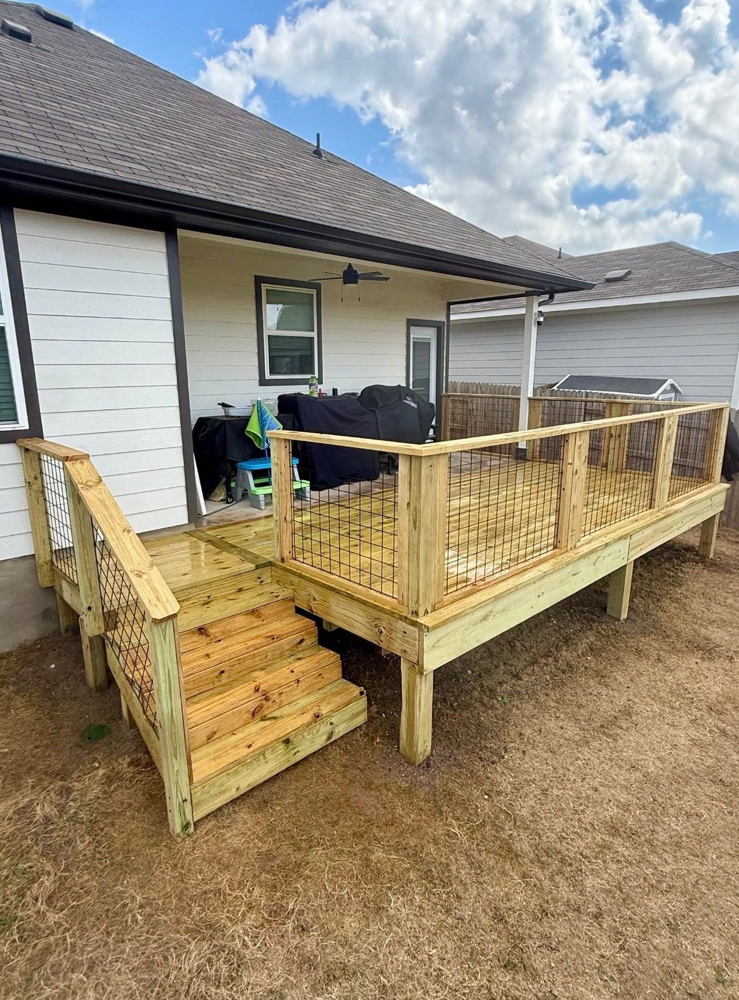
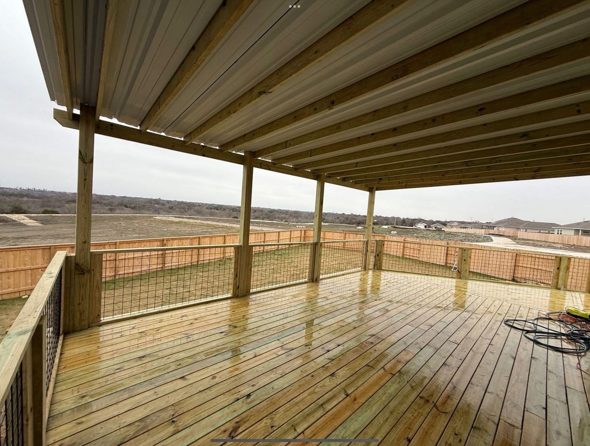

In an Austin July, a deck can be the best room of the house at 8 a.m. and too hot to stand on barefoot by 3 p.m. The board you pick decides part of that, and how much sun the deck gets and what is over it decide the rest.
Here is how pressure-treated pine, cedar, composite and PVC hold up to Texas heat and sun, which ones stay cooler underfoot, what each costs installed in 2026, and the build details that matter more in this climate than anywhere else.
Which decking stays coolest in Texas sun?
Wood stays cooler underfoot than composite or PVC in direct sun, and cedar is usually the most comfortable of the common options. Composite and PVC boards absorb and hold more heat, so on a deck in full afternoon sun they can get hot enough that you want shoes, especially in darker colors.
That does not rule composite out. Color matters more than brand: a light gray or tan composite board is far more comfortable than a dark brown or charcoal one from the same line. And on a deck with shade over the seating area, the difference between materials shrinks a lot.

Austin decking compared
| Decking | Installed, per sq ft | Typical 300 sq ft deck | In Texas heat and sun |
|---|---|---|---|
| Pressure-treated pine | $30 to $45 | $9,000 to $13,500 | Stays cooler underfoot. Needs stain or sealer every 2 to 3 years to slow graying and checking. |
| Cedar | $50 to $75 | $15,000 to $22,500 | The most comfortable barefoot. Moves less than pine. Needs the same restaining schedule. |
| Composite or PVC | $60 to $100 | $18,000 to $30,000 | No stain, ever. Gets hotter in direct sun, so pick a light color and plan some shade. |
Our Austin deck cost guide breaks down what moves the price within each range, and our Trex vs TimberTech vs Fiberon comparison goes deeper on the composite brands.
What Texas sun does to wood decking
Sun and heat are harder on wood than rain is here. Ultraviolet light breaks down the surface fibers, which is why unstained wood turns gray. Heat and dry spells pull moisture out of the boards, so they check, meaning small cracks open along the grain, and boards can cup or twist if they dry unevenly.
None of that makes wood a bad choice. It means a wood deck in Austin needs stain or sealer every 2 to 3 years, with the south- and west-facing parts usually wearing first. Pressure-treated pine moves and checks more than cedar, which is part of why cedar costs more. Our guide to when to stain a deck covers how long to wait on new wood and how to tell when a deck needs another coat.
What Texas sun does to composite and PVC
Composite and PVC do not rot, check or need stain, which is the whole appeal. Modern capped boards, with a protective plastic shell over the core, hold their color far better than the early generations did, though every board still lightens a little in the first months of sun.
The trade-offs here are heat and movement. These boards expand and contract more with temperature than wood does, so the gaps between boards and at the ends have to follow the manufacturer's spacing for the season they are installed in. Skip that and you get buckled boards in August or wide gaps in January. They also need airflow underneath, which matters on low decks built close to the ground.

Shade matters more than the board
On a west-facing yard with no trees, shade over part of the deck does more for comfort than any decking choice. A covered section or a pergola over the seating area keeps the boards under it cooler, protects them from sun damage and makes the deck usable on summer afternoons.
It is easier and cheaper to plan the footings for a cover while the deck is being built than to add them later. An attached open-top cedar pergola runs $10,500 to $16,000 for a 12x12 to 12x16, and a solid-roof shingle cover of that size runs $14,500 to $22,000. See our Austin patio cover page, and if you already have a pergola, our guide to adding a roof to a pergola.
Not sure which board fits your yard? Send a photo and tell us which way the deck faces. John will look at the sun and the layout and quote the material that fits, line-itemed and free.
Get a deck quoteBuild details that matter in Texas heat
- Board gaps. Wood boards need gaps for drainage and airflow, and composite boards need the manufacturer's spacing for expansion. Both keep the surface drier and the framing healthier.
- Airflow underneath. A deck built tight to the ground with no ventilation traps heat and moisture under the boards. Low decks need enough clearance and open sides to breathe.
- Protected framing. The frame is the same lumber under any decking, and it is the part that fails first if water sits on it. Joist tape on top of the framing helps it last.
- Fasteners rated for the material. Treated lumber is corrosive to cheap fasteners, and composite boards have their own clip and screw systems. Using the wrong ones shortens the life of the deck.
- Light colors for stain too. A medium or light stain on a wood deck stays cooler and hides fading better than a dark one.

Railings get hot too
Railings are the part of a deck people touch most, and in full sun some get hot enough to notice. Black metal balusters and metal top rails heat up the fastest. A wood or composite top cap over a metal railing gives your hands and forearms a cooler place to rest, and it is a small upgrade on a deck that gets afternoon sun.
Cattle panel railings framed in wood keep the view open and stay comfortable to lean on, because you rest on the wood frame rather than the wire. On lower decks that do not need a railing, wide steps or built-in benches along the edge avoid the question entirely.
Decks around pools and hot tubs
Around a pool or hot tub, people walk barefoot and wet, so heat and grip both matter more. Light-colored boards are the place to start. Shade over the lounge area helps more here than anywhere else on the deck. Leave room for water to drain through the gaps instead of puddling on the surface, and keep chemicals and splash from sitting on wood boards.
If the pool area is mostly hardscape, a light-colored concrete surface may suit you better than decking there. Our pool deck cost guide compares concrete, pavers, stone and composite around pools.
Do the barefoot test before you choose
Ask for samples of the boards you are considering and leave them in the sun on your driveway or patio for an afternoon. Touch them at 3 p.m., then do the same with a light and a dark color from the same line. It takes ten minutes and settles the question better than any brochure.
If you have dogs, check with your hand the way you would for pavement. Paws feel hot surfaces before people do.
What we would build in Austin
- On a budget or a big footprint: pressure-treated pine with a medium stain. It is the most affordable way to a large deck and stays cool underfoot.
- For the best barefoot comfort and look: cedar, stained every 2 to 3 years.
- If you never want to stain again: composite or PVC in a light color, with shade over the part of the deck you use most.
John walks every estimate himself, checks which way the deck will face and writes a line-itemed quote. We build decks across greater Austin, including Round Rock, Cedar Park and Buda. See recent builds on our Austin deck page, or browse our deck design ideas.
Decking and heat questions, answered
What is the best decking for Texas heat?
For comfort underfoot, wood, and especially cedar, stays cooler than composite or PVC in direct sun. If you never want to stain, choose composite or PVC in a light color and plan shade over the part of the deck you use most.
Does composite decking get too hot in Texas?
It can in full afternoon sun, especially in dark colors. Light gray or tan boards are much more comfortable, heat-reflective lines help, and shade over the seating area makes the biggest difference.
Is cedar or pressure-treated pine better for an Austin deck?
Cedar is more comfortable barefoot, moves and checks less, and has the warmer look. Pressure-treated pine costs less, $30 to $45 per sq ft installed against $50 to $75 for cedar, and both need stain or sealer every 2 to 3 years in Austin sun.
How much does a composite deck cost in Austin?
Composite or PVC decking costs $60 to $100 per sq ft installed in Austin, so a typical 300 sq ft deck runs $18,000 to $30,000. Pressure-treated pine runs $9,000 to $13,500 and cedar $15,000 to $22,500 at that size.
How often does a wood deck need stain in Texas?
Plan on every 2 to 3 years. Austin sun grays and dries out wood quickly, and the south- and west-facing parts of a deck usually need it first.
What color decking is best for hot climates?
Light colors. A light gray, tan or natural tone stays noticeably cooler than dark brown or charcoal in the same material, and lighter colors hide fading better too.
Does a deck need shade in Austin?
If it faces west or south with no trees, yes, at least over the seating area. A pergola or covered section keeps the boards cooler, protects them from sun and makes the deck usable on summer afternoons.
How do I keep my deck cool in summer?
Add shade over the area you use most, choose light colors for boards or stain, and leave room for airflow under the deck. Testing board samples in the sun before you choose helps too.
Prices on this page come from our own 2026 Austin-area quotes. Rules change, so we check which ones apply to your address before every build. New to a term? See our plain-English glossary.